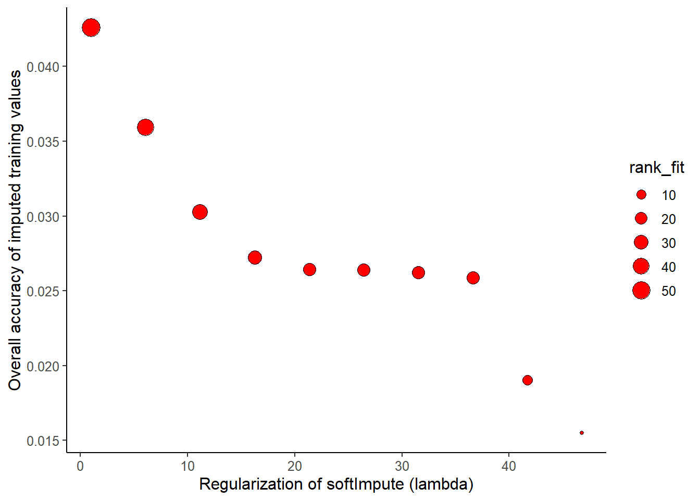
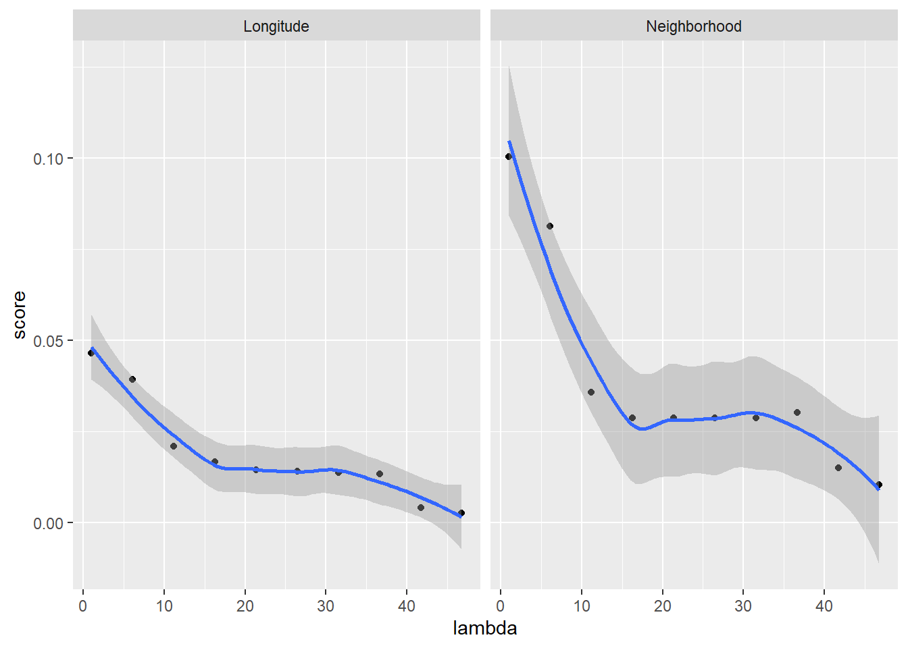

scoring_imputes
scoring_imputes.Rmd
library(ipa)
library(dplyr)
#>
#> Attaching package: 'dplyr'
#> The following objects are masked from 'package:stats':
#>
#> filter, lag
#> The following objects are masked from 'package:base':
#>
#> intersect, setdiff, setequal, union
library(purrr)
library(tidyr)
library(ggplot2)
library(yardstick)
#> For binary classification, the first factor level is assumed to be the event.
#> Set the global option `yardstick.event_first` to `FALSE` to change this.
data("ames", package = 'ipa')
df_cplt <- ames$complete
df_miss <- ames$missingIn the previous vignette, we covered the first 6 steps in the brewing process. This vignette adds the next two steps: sipping and chugging. Also, we will
use an amputed version of the Ames housing data from the
AmesHousingpackage, which is available on CRAN.introduce the
softbrew, which leverages the extremely fastsoftImputealgorithm.
First, we split our data into training / testing sets and then apply the first 6 brew steps.
# random seed for reproducing these results
set.seed(3290)
train_index <- sample(nrow(df_miss), 2000)
# data to impute
training <- df_miss[train_index, ]
testing <- df_miss[-train_index, ]
# complete data (used to evaluate accuracy of imputations)
training_cplt <- df_cplt[train_index, ]
testing_cplt <- df_cplt[-train_index, ]
# a soft brew using softImpute algorithm
sft_brew <- training %>%
brew_soft(outcome = Sale_Price) %>%
verbose_on(level = 1) %>%
spice(with = spicer_soft(rank_stp_size = 10)) %>%
mash(with = masher_soft(bs_col.scale = FALSE)) %>%
stir(timer = TRUE) %>%
ferment(data_new = testing, timer = TRUE) %>%
bottle(type = 'tibble')
#> your brew will now tell you generally what it's doing.
#> Spices being used:
#> <rank_max_init> has value(s) <2>
#> <rank_max_ovrl> has value(s) <78>
#> <rank_stp_size> has value(s) <10>
#> <lambda> has value(s) <46.8, 41.71, 36.62, ..., 1>
#> <grid> has value(s) <FALSE>
#> Additional parameters set:
#> <bs> has value(s) <TRUE>
#> <bs_maxit> has value(s) <20>
#> <bs_thresh> has value(s) <0>
#> <bs_row.center> has value(s) <FALSE>
#> <bs_col.center> has value(s) <TRUE>
#> <bs_row.scale> has value(s) <FALSE>
#> <bs_col.scale> has value(s) <FALSE>
#> <si_type> has value(s) <als>
#> <si_thresh> has value(s) <0>
#> <si_maxit> has value(s) <100>
#> <si_final.svd> has value(s) <TRUE>
#> <verbose> has value(s) <1>
#> Fitting soft imputation models to training data...
#> Applying biScale() to data
#> Fitting soft-impute models
#> fit 1 of 10: lambda = 46.800, rank.max = 2 rank.fit = 2
#> fit 2 of 10: lambda = 41.711, rank.max = 12 rank.fit = 12
#> fit 3 of 10: lambda = 36.622, rank.max = 22 rank.fit = 21
#> fit 4 of 10: lambda = 31.533, rank.max = 31 rank.fit = 22
#> fit 5 of 10: lambda = 26.444, rank.max = 32 rank.fit = 22
#> fit 6 of 10: lambda = 21.356, rank.max = 32 rank.fit = 23
#> fit 7 of 10: lambda = 16.267, rank.max = 33 rank.fit = 27
#> fit 8 of 10: lambda = 11.178, rank.max = 37 rank.fit = 35
#> fit 9 of 10: lambda = 6.089, rank.max = 45 rank.fit = 45
#> fit 10 of 10: lambda = 1.000, rank.max = 55 rank.fit = 55
#> obtaining imputed values and restoring original types
#> Finished after 9.75 secs
#> Fitting soft imputation models to testing data...
#> Applying biScale() to data
#> Fitting soft-impute models
#> fit 1 of 10: lambda = 46.800, rank.max = 2 rank.fit = 2
#> fit 2 of 10: lambda = 41.711, rank.max = 12 rank.fit = 12
#> fit 3 of 10: lambda = 36.622, rank.max = 22 rank.fit = 22
#> fit 4 of 10: lambda = 31.533, rank.max = 32 rank.fit = 24
#> fit 5 of 10: lambda = 26.444, rank.max = 34 rank.fit = 25
#> fit 6 of 10: lambda = 21.356, rank.max = 35 rank.fit = 26
#> fit 7 of 10: lambda = 16.267, rank.max = 36 rank.fit = 32
#> fit 8 of 10: lambda = 11.178, rank.max = 42 rank.fit = 42
#> fit 9 of 10: lambda = 6.089, rank.max = 52 rank.fit = 52
#> fit 10 of 10: lambda = 1.000, rank.max = 62 rank.fit = 62
#> obtaining imputed values and restoring original types
#> Finished after 15.91 secs
#> Bottling training data.
#> Bottling testing data.
#> Converting bottled data into a tibbleIn this vignette we cover the final three steps, each of which are geared to help develop an accurate supervised prediction model using the brew’s imputed data.
So far, we have imputed one training and testing set using 1 through 50 nearest neighbors. A reasonable question to ask is “Which neighbor specification imputed missing values most accurately?”
Sip
sip helps you check the accuracy of imputed values. Here is an obvious limitation: imputation accuracy can only be checked when you know what the imputed value should have been. Put another way, you can only check imputation accuracy if the data you imputed weren’t really missing in the first place.
Nevertheless, you may still be able to draw insights about a problem by subsetting your incomplete data to contain only complete observations (using e.g. tidyr::drop_na()) and then artificially adding missing values (using e.g. mice::ampute), as we have done with the diabetes data. Once you’ve found a strategy that seems to work best for your simulated missing data, you can apply it to the real missing data. (A key assumption in this approach is that the simulated missing patterns match the real ones. If this does not seem plausible, chug is a viable alternative to sip).
sip lets you tell it how to score accuracy. This instruction is passed using the arguments
-
fun_ctns_errorfunction to score continuous variables (doubles and integers) -
fun_bnry_errorfunction to score binary variables (2 categories) -
fun_catg_errorfunction to score categorical variables (>2 categories)
You can supply your own function for different variable types or rely on ipa’s defaults, which evaluates continuous variables using an R-squared statistic and binary + categorical variables using a Kappa statistic. A benefit of the default approach is that both statistics are on the same scale and have similar interpretations.
# sip from the bottled brew.
# (two sips total to score both training and testing)
sft_brew <- sft_brew %>%
sip(from = training, data_complete = training_cplt)Save the scores as a tibble outside of the brew so that they are easier to analyze.
# unnest_wider sub
# set(j = .col, value = sapply(.$pars, function(x) x[[.col]]))
impute_accuracy <- sft_brew %>%
pluck('wort') %>%
as_tibble() %>%
unnest_wider(col = pars) %>%
select(lambda, rank_fit, training_score) %>%
unnest(cols = training_score)
impute_accuracy
#> # A tibble: 800 x 5
#> lambda rank_fit variable type score
#> <dbl> <dbl> <chr> <chr> <dbl>
#> 1 46.8 2 Sale_Price ctns NA
#> 2 46.8 2 MS_SubClass catg 0.0161
#> 3 46.8 2 MS_Zoning catg 0
#> 4 46.8 2 Lot_Frontage ctns 0.00670
#> 5 46.8 2 Lot_Area intg 0.00295
#> 6 46.8 2 Street bnry 0
#> 7 46.8 2 Alley catg 0
#> 8 46.8 2 Lot_Shape catg 0.0416
#> 9 46.8 2 Land_Contour catg 0
#> 10 46.8 2 Lot_Config catg -0.00207
#> # ... with 790 more rowsIs there an ideal number of neighbors to use for the imputation of missing values in these data? A quick but limited way to investigate this is to compute an overall accuracy score for each imputed set by averaging the scores of individual variables together.
impute_accuracy_ovrl <- impute_accuracy %>%
group_by(lambda, rank_fit) %>%
summarize(score_overall = mean(score, na.rm = TRUE)) %>%
arrange(desc(score_overall))
ggplot(impute_accuracy_ovrl) +
aes(x = lambda, y = score_overall, size = rank_fit) +
geom_point(shape = 21, col = 'black', fill = 'red') +
theme_classic() +
theme(text = element_text(size = 12)) +
labs(y = 'Overall accuracy of imputed training values',
x = 'Regularization of softImpute (lambda)')
It looks like using lambda = 1 and rank = 55 has the best overall score. We can also look at the accuracy of imputations for individual variables:
impute_accuracy %>%
filter(variable %in% c('Longitude', 'Neighborhood')) %>%
ggplot(aes(x=lambda, y=score)) +
geom_point() +
geom_smooth() +
facet_wrap(~variable)
#> `geom_smooth()` using method = 'loess' and formula 'y ~ x'
Chug
In applied settings where siping isn’t feasible, chug provides a more direct way to assess the quality of imputed data. Specifically, chug will fit a learning algorithm to the training set and predict outcomes in the corresponding testing set, then summarize the accuracy of those predictions in the score_ex column, which will be added to the brew’s wort:
sft_brew <- chug(sft_brew)
mdl_scores <- sft_brew$wort %>%
unnest_wider(pars) %>%
select(lambda, rank_fit, model_score) %>%
unnest_wider(model_score)
arrange(mdl_scores, desc(score_ex))
#> # A tibble: 10 x 5
#> lambda rank_fit preds_cv preds_ex score_ex
#> <dbl> <dbl> <list> <list> <dbl>
#> 1 1 55 <dbl [2,000]> <dbl[,1] [930 x 1]> 0.616
#> 2 6.09 45 <dbl [2,000]> <dbl[,1] [930 x 1]> 0.614
#> 3 11.2 35 <dbl [2,000]> <dbl[,1] [930 x 1]> 0.599
#> 4 31.5 22 <dbl [2,000]> <dbl[,1] [930 x 1]> 0.593
#> 5 36.6 21 <dbl [2,000]> <dbl[,1] [930 x 1]> 0.592
#> 6 16.3 27 <dbl [2,000]> <dbl[,1] [930 x 1]> 0.589
#> 7 41.7 12 <dbl [2,000]> <dbl[,1] [930 x 1]> 0.587
#> 8 46.8 2 <dbl [2,000]> <dbl[,1] [930 x 1]> 0.585
#> 9 21.4 23 <dbl [2,000]> <dbl[,1] [930 x 1]> 0.583
#> 10 26.4 22 <dbl [2,000]> <dbl[,1] [930 x 1]> 0.581Under the hood, chug is using cv.glmnet to internally validate a regression model using each training and testing set, returning a list with
model_cv: a model tuned by cross-validation, fitted to the training datapreds_cv: the model’s predicted values for internal testing datapreds_ex: the model’s predicted values for external testing datascore_ex: a numeric value indicating external prediction accuracy
The type of model and model summary depend on the type of outcome in the brew. Notably, model_cv will only be returned if keep_mdl = TRUE, which must be passed into .fun_args using the net_args() helper function:
net_args() will also let you dictate glmnet arguments. For example, we can adjust the value of alpha and the complexity of the final model using cmplx.
sft_brew <- chug(sft_brew,
.fun_args = net_args(
alpha = 0.1,
cmplx = 'lambda.min'
)
)
arrange(mdl_scores, desc(score_ex))
#> # A tibble: 10 x 5
#> lambda rank_fit preds_cv preds_ex score_ex
#> <dbl> <dbl> <list> <list> <dbl>
#> 1 1 55 <dbl [2,000]> <dbl[,1] [930 x 1]> 0.616
#> 2 6.09 45 <dbl [2,000]> <dbl[,1] [930 x 1]> 0.614
#> 3 11.2 35 <dbl [2,000]> <dbl[,1] [930 x 1]> 0.599
#> 4 31.5 22 <dbl [2,000]> <dbl[,1] [930 x 1]> 0.593
#> 5 36.6 21 <dbl [2,000]> <dbl[,1] [930 x 1]> 0.592
#> 6 16.3 27 <dbl [2,000]> <dbl[,1] [930 x 1]> 0.589
#> 7 41.7 12 <dbl [2,000]> <dbl[,1] [930 x 1]> 0.587
#> 8 46.8 2 <dbl [2,000]> <dbl[,1] [930 x 1]> 0.585
#> 9 21.4 23 <dbl [2,000]> <dbl[,1] [930 x 1]> 0.583
#> 10 26.4 22 <dbl [2,000]> <dbl[,1] [930 x 1]> 0.581chug allows you to provide your own function with arguments that include .trn, .tst, and outcome. Below we write and use a function to fit and validate a classical logistic regression model:
# a function to fit logit model, and predict on new data
fit_lm <- function(.trn, .tst, outcome){
lm(formula = Sale_Price ~ Longitude + Latitude, data = .trn) %>%
predict(.tst, type = 'response') %>%
rsq_trad_vec(truth = .tst$Sale_Price, estimate = .)
}
sft_brew <- chug(sft_brew, .fun = fit_lm)
model_scores <- sft_brew$wort %>%
unnest_wider(pars) %>%
select(lambda, rank_fit, model_score) %>%
mutate(model_score = as.numeric(model_score)) %>%
arrange(model_score)The model scores are graphed here, showing a maximum AUC statistic when neighbors are used.
ggplot(model_scores) +
aes(x = lambda, y = model_score) +
geom_smooth(method = 'lm', col = 'grey90', formula = y~poly(x,3)) +
geom_point(shape = 21, size = 2.4, col = 'black', fill = 'red') +
theme_classic() +
theme(text = element_text(size = 12)) +
labs(y = 'Variability explained in external data',
x = 'Regularization of softImpute (lambda)')